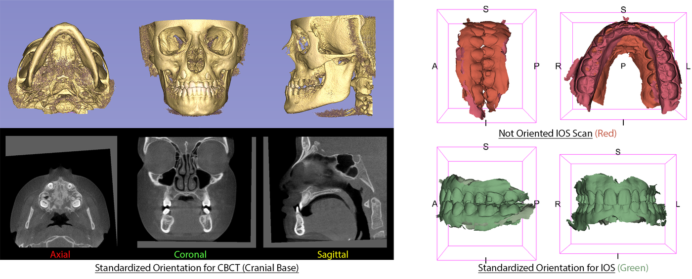

ASO: orientare automaticamente le scansioni
ASO ruota una scansione per portarla nel sistema di un paziente di riferimento: non confronta due momenti tra loro e non segmenta nulla. Gestisce sia un CBCT (un volume) sia una scansione intraorale (una superficie), con due motori diversi dietro un'unica finestra.
Quando usarlo
Prima della maggior parte delle registrazioni, in realtà. Una registrazione presuppone che i suoi due input partano già con un orientamento ragionevolmente coerente; senza, non ha un punto di partenza corretto. AREG_IOS, per esempio, cerca direttamente il file di trasformazione prodotto da ASO per costruire la propria matrice: se le tue scansioni non sono mai state orientate da ASO, non c'è nulla da trovare. Esegui ASO ogni volta che prepari scansioni per una registrazione, per sovrapporre una serie longitudinale, o semplicemente per portare un'intera coorte nello stesso sistema.
Scegliere una modalità
Per prima cosa dici ad ASO che tipo di file hai: CBCT per un volume, IOS per una scansione intraorale. Per ciascuno sono disponibili due modalità. Fully-Automated richiede solo le scansioni grezze: ASO posiziona da sé i landmark di cui ha bisogno (tramite una rete, per un CBCT) o segmenta i denti (per una scansione) prima di orientare. Semi-Automated salta quella fase di predizione e lavora direttamente su landmark o denti che hai già identificato: più veloce, ma presuppone che quel lavoro preparatorio esista già.
Su un CBCT la modalità semiautomatica richiede un file di trasformazione che solo la modalità automatica produce, nel suo passaggio di ricentratura. Se esegui la modalità semi direttamente su scansioni che ASO non ha mai elaborato, fallisce paziente dopo paziente. In pratica, per il CBCT la modalità semiautomatica ha senso solo come seconda passata: per esempio per rifare l'orientamento di una serie già passata una volta dalla modalità automatica.

Di che cosa hai bisogno, che cosa ottieni
Da fornire
- CBCT: il volume come
.nii.gz(il DICOM è accettato ma meno affidabile, preferisci.nii.gzquando puoi). In modalità semiautomatica, anche i tuoi landmark già posizionati e il file di trasformazione descritto sopra - Scansione intraorale (IOS): la mesh, in un formato comune (convertita in
.vtklungo il percorso). In modalità semiautomatica, i 3 o 4 denti di riferimento da selezionare sull'arcata; in modalità automatica, nient'altro: la segmentazione dei denti parte da sola se non è già stata fatta - Il paziente di riferimento (il «gold»): un dataset scaricato una volta, verso cui tende ogni orientamento
Che cosa ne esce
- La scansione riorientata: sempre
.nii.gzper un CBCT qualunque sia il formato di input,.vtkper una scansione intraorale - Un file di trasformazione, che i moduli di registrazione a valle (AREG_IOS in primis) cercano automaticamente
- Anche i landmark o i denti di riferimento, riorientati
Passo dopo passo
- Scarica il paziente di riferimento e i modelli. Un passaggio da fare una volta: è il bersaglio verso cui si orienterà ciascuna delle tue scansioni.
- Scegli il tipo di dati e la modalità. CBCT o IOS, poi Fully-Automated o Semi-Automated a seconda di ciò che hai a disposizione.
- Indica la cartella di input. ASO elabora l'intera cartella in un'unica esecuzione.
- Per una scansione intraorale in modalità semiautomatica, seleziona i denti di riferimento (3 o 4) su cui si allineerà l'orientamento. Per un CBCT in modalità semiautomatica, assicurati che i tuoi landmark coprano almeno 4 punti in comune con il gold: l'interfaccia ne accetta 3 selezionati, ma l'orientamento fallisce sotto i 4.
- Seleziona «occlusion» se hai entrambe le arcate. Un'arcata guida allora l'orientamento e la stessa rotazione viene applicata all'altra per mantenere intatto il rapporto di occlusione.
- Imposta una cartella di output, poi esegui.
Se qualcosa va storto
In modalità semiautomatica, ASO comincia unendo in un unico file tutti i file di landmark che trova nella tua cartella di input, poi elimina gli originali. Conserva altrove una copia dei tuoi file .mrk.json prima di lanciare un job, soprattutto se la cartella di input è anche il posto in cui tieni l'unica copia di quei landmark.
La modalità occlusione abbina le arcate superiore e inferiore dal nome del file (Upper/_U_ oppure Lower/_L_). Un file il cui nome non riporta nessuno di questi marcatori viene trattato in silenzio come arcata inferiore: senza alcun messaggio di errore. Controlla i nomi dei file prima di attivare questa opzione.
Se un file di output esiste già con il nome atteso, ASO non lo riscrive e riporta comunque successo. Dopo aver corretto un'impostazione, indica una cartella di output vuota anziché rieseguire sulla stessa.
E dopo
Una scansione orientata da ASO non è garantita come anatomicamente perfetta: l'orientamento è una stima geometrica, non una verità di riferimento. Apri il risultato in Slicer e confrontalo visivamente con il paziente di riferimento prima di darlo in pasto a una registrazione. È proprio questo l'uso a valle per cui il file di trasformazione viene prodotto: i moduli successivi lo usano per ricostruire la matrice completa, dalla scansione grezza fino al risultato registrato.
Come citare
Se hai usato ASO nella tua ricerca, cita:
Anchling L, Hutin N, Huang Y, Barone S, Roberts S, Miranda F, Gurgel M, Al Turkestani N, Tinawi S, Bianchi J, Yatabe M, Ruellas A, Prieto JC, Cevidanes L. Automated Orientation and Registration of Cone-Beam Computed Tomography Scans. In: Clinical Image-Based Procedures (CLIP 2023), held with MICCAI 2023, Lecture Notes in Computer Science vol. 14242, Springer Cham, 2023, p. 43-58.
doi:10.1007/978-3-031-45249-9_5. L'articolo della famiglia ASO/AREG: come si ottiene l'orientamento automatico e quanto si discosta da uno manuale. testo completo gratuito.
Contesto, non una citazione dello strumento
- Ruellas et al., AJODO 2016: Common 3-dimensional coordinate system for assessment of directional changes. Il sistema di coordinate che l'orientamento automatico mira a riprodurre. È ciò che definisce «correttamente orientato».
- Gillot et al., Orthod Craniofac Res 2023: Automatic landmark identification in cone-beam computed tomography. I landmark su cui ASO si orienta provengono da qui.
La bibliografia completa dello strumento, ciò che è stato trovato e ciò che è stato cercato senza successo, si trova nelle sue fonti.
Come funziona davvero → La pagina dell'Atlante: il principio geometrico condiviso dai due backend, che cosa è predetto da una rete e che cosa è calcolato, e le insidie trovate nel codice.